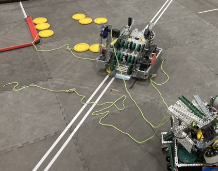

3249V Infrared is comprised of 3 team members, Aidan McCallum (Coder of 4 years), Ethan Regan (Builder of 2 years), and Tyler Fields (Rookie Controller).
3249V Infrareds bot is named Courier. It is a turret bot with turret mounted rollers, flywheel, and expansion. With a flexwheel intake and 3 odometry wheels in its 4 motor, 6 wheels chassis. The bot is coded in PROS with the bot being controlled by okapi functions.
The chassis consists of 6 wheels and 4 motors. The 4 motors are located on the middle and back wheels with the front wheels moving due to the geartrain. The Geartrain makes sure the motors are all sharing their power at all times and help keep traction when moving and while pushing. One special thing about the chassis are the locked omnis located in the middle of both sides of the chassis. Locked Omnis are created by ziptying each indivdual small wheel to prevent them from turning which allows for more traction. Locked omnis have more traction than using the traditional friction wheel.
Courier utilizes Odometry wheels to track movement along the field. Odometry wheels wheels are loose wheels unconnected to the drive train to get rotations. Couriers 3 odometry wheels work better than getting rotational data from the drive train wheels due to them not being connected to the chassis so incase courier is being pushed or against an obstacle the encoders won't skip keeping accuracy. The second reason to track rotational data along the X-axis so when courier is pushed it still knows where it is relative to the field. Image shown in Chassis
Courier had an Autonmous selector on the side which was to be used for selecting between diffrent Autonmous in the same program. It didn't get used due to not having multiple autonomi because courier did not qualify for state and was taking too long to build. It worked by having an potentiometer behind the paper which tracked the arrows heading.
Courier's intake is a flexwheel polycarbonate intake. Its a complient mechanism that molds itself around the game object (discs) to allow for better grip and controll of the disc when intaking discs. Albeit not the best intake due to using 60A black flexwheels it is still a consistant intake. An improvment to the design is swapping the 60A small flexwheels for 30A small flexwheels for more compliance. Still the black flexwheels were sufficent enough for the intake
Courier's turret is the centerpeice of the robot. It is where its launching Mechanism, roller mechanism, and string launcher is mounted. It has two parts to it. The Turret Circle which is a ring of bent 5 by plates which treads screwed onto the bottom 3 holes. This is where everything is mounted onto. The second part of the turret is the turn table. It consists of two layers of chain, one below the sprocket gears, and on the sprocket gears. Which when spun by a red Torque Motor spins the Turret ring. On the outside of the Turn table is the wire gaurd which prevents wires from getting stuck within the chain. The main downside of the turret is the wiring which wasn't fully realized and sometimes went outside the 18x18.
Courier's Flywheel is the method on how it scores High Goal Discs. It's a 30A 4 inch Diamter Flexwheel that spins at 3600rpm using a direct motor. A direct motor is a motor that has a custom insert made out of either a spacer or polycarbonate that adapts the raw brushmotor output to the shaft. The bottom part of it is made out of steel in order to negate some friction aluminium would have. On the top and bottom of the flexwheel are polycarbonate covers that prevent air resistance from the internals of a flexhweel in order to acheive full speed. The main downside of this design is the compression of the flexwheel changing the diamter of itself due to the high speeds which leads to non-linear disc launching across diffrent speeds and disallows low speed launching.
Couriers indexer is a bar lift that when powered by a pneumatic slides a disc into the flywheel mechanism. The bars are made out of aluminium 1 by 1s for the weight and size of the area. The design allows the usage of leverage to make the 2 inches a pneumatic can travel around 6 inches. This design is small and compact enough for its functionality in the turret mechanism and 360 loading from turret.
Courier's Roller mechanism is a complient mechanism to spin the roller in Spin up. It uses a Motor to spin a 45A flexwheel (due to a lack flexwheels in iTech) which spins the roller mechanism. The mechanism is installed onto the turret on the left side. Overall it is an easy and effective mechanism although with poor build quality. This is mainly due to it being built by Tyler Fields the teams rookie.
Couriers string mechanism was by far the most sucessful part of the robot, and one of the best string expansions at iTech. It has 3 strings with pneumatic nuts as weight at the ends. On each nut there is the connecting string which is connected to the robot and a dread which allows for string spread. Each nut also has a black rubber band and an open ziptie. The rubber band is to launch the the nut and the ziptie is to connect to a firing mechanism. The firing mechanism is a pneuamtic which is connected to a gear which is then connected to a shaft on the gear that goes down when the gear is spun. Each nut has a firing c-channel where the rubber band is pulled back on. Underneath each c-channel is string storage where the connected string is stored. The dreads were made later into the season and did not have a dedicated storage so they were placed on the flywheel where they sometimes got stuck. The whole mechanism is mounted on the back of the turret over the turret disc bay. Image of a sucessful string launch shown below
Couriers Coding is one of the most impressive parts of the robot. Unfortunatly due to time restrictions and the bot being unfinished before it can be fully tested. Due to this its full potential was never utilized. It contained a GoForward PID, Turn PID, Turret PIDFF, and Flywheel PIDFF within it. Utilizing these PID's it had a coordinate system where it can move to any point on the field. The Robot had the calculations and setup to begin calibrating an autonomus aiming system just not the time fully calibrate it and codetest a lot of it. Link to the Code below
Code Github Link
3249V's notebook is an alright note. It has over 300 pages but with medium quality. It has received no awards but in its later pages the formatting takes up a lot of space. Overall its a good starting point if you are intesting in doing a notebook in google slides to look at but is not the best example. Notebook download and link below.
Notebook Download (May not Work)
Google Slides deck